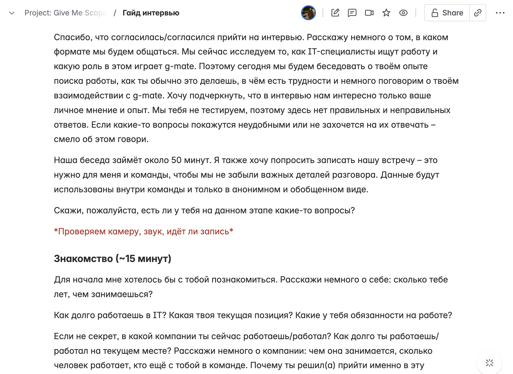
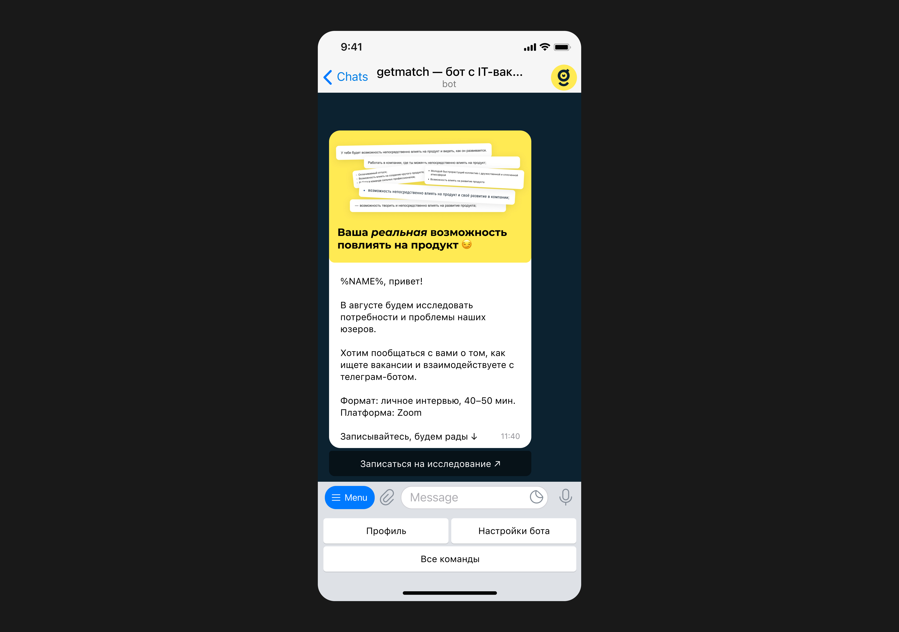
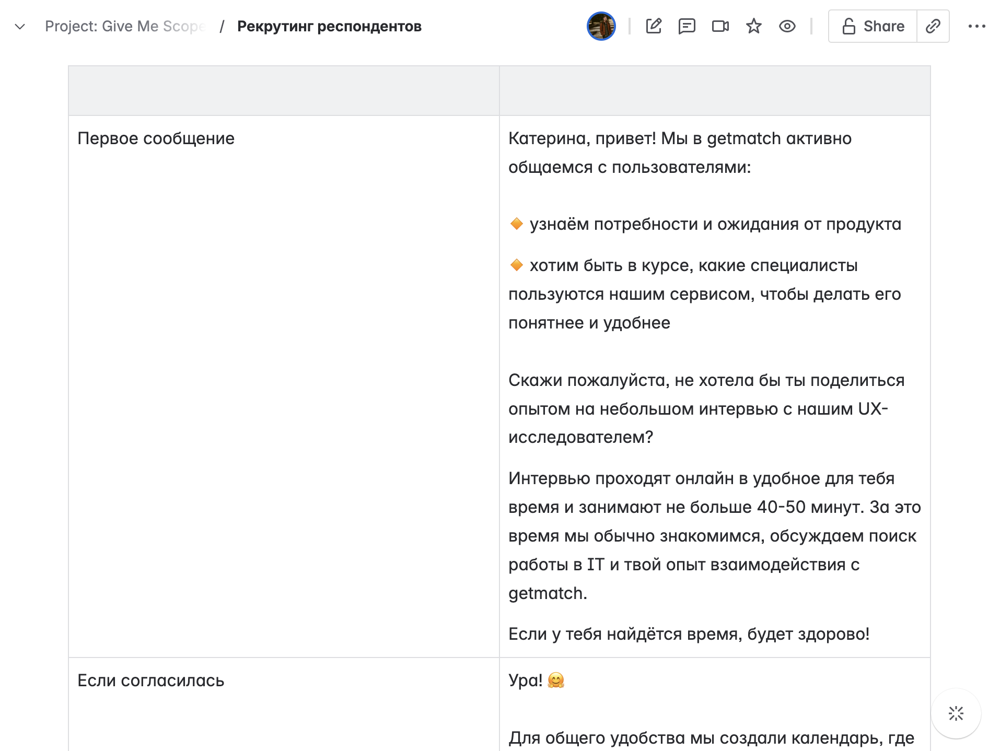
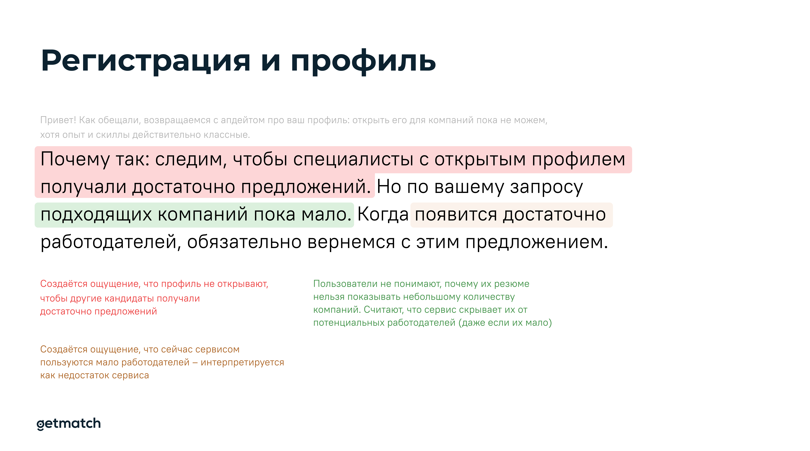

<!DOCTYPE html>
<html>
  <head>
    <meta charset="utf-8">
    <meta name="viewport" content="width=device-width, initial-scale=1.0">
    <meta property="og:type" content="article">
    <meta property="og:title" content="Исследование персон кандидатов getmatch • Артём Самсонов • Продуктовый дизайнер">
    <meta property="og:description" content="Как мы сформировали персоны кандидатов в продукте и пользуемся ими до сих пор">
    <meta property="og:image" content="http://artemsamsonov.com/img/default.jpg">
    <link href="https://fonts.googleapis.com/icon?family=Material+Icons" rel="stylesheet">
    <link rel="stylesheet"><!-- Yandex.Metrika counter --> <script type="text/javascript" > (function(m,e,t,r,i,k,a){m[i]=m[i]||function(){(m[i].a=m[i].a||[]).push(arguments)}; m[i].l=1*new Date();k=e.createElement(t),a=e.getElementsByTagName(t)[0],k.async=1,k.src=r,a.parentNode.insertBefore(k,a)}) (window, document, "script", "https://mc.yandex.ru/metrika/tag.js", "ym"); ym(88097279, "init", { clickmap:true, trackLinks:true, accurateTrackBounce:true, webvisor:true }); </script> <noscript><div></div></noscript> <!-- /Yandex.Metrika counter -->
    <title>Исследование персон кандидатов getmatch • Артём Самсонов • Продуктовый дизайнер</title>
  <link href="./css/style.bundle.css" rel="stylesheet"></head>
</html>
<body class="body_light">
  <header class="header header_light">
    <div class="header__logo"><a href="index.html">Артём Самсонов</a></div>
  </header>
  <div class="content">
    <div class="article">
      <section>
        <h1>Исследование персон кандидатов getmatch</h1>
        <p class="article__annotation">getmatch пользуются разные кандидаты — у каждого из них свои потребности и цели. Мы с нанятым UX-исследователем сформировали пять персон, построили для них CJM'ы и наметили точки роста продукта</p>
        <h2>Этап 1. Выбор метода и скрипт исследования</h2>
        <p> Опираясь на цель исследования, мы решили провести серию глубинных интервью с кандидатами. Выделили три блока:</p>
        <ul>
          <li>Знакоство с кандидатом, общие вопросы</li>
          <li>Интервью о поиске работы: как, где и когда кандидаты ищут вакансии, как откликаются, что происходит на последующих этапах</li>
          <li>Поиск работы в getmatch: вопросы о регистрации в боте, кейсы его использования, преимущества и  недостатки сервиса</li>
        </ul>
        <p class="article__image"><a href="../img/getmatch-personas-01.jpg" target="_blank"></a><span class="article__image-caption">Выдержка из написанного скрипта</span></p>
        <h2>Этап 2. Рекрутинг респондентов</h2>
        <p>Пользователей, которые не ищут работу в данный момент, рекрутрировали с помощью рассылки в телеграм-бот. Активным кандидатам пройти интервью помогали рекрутеры, которые связывались с ними по поводу открытых вакансий.</p>
        <p class="article__image"><a href="../img/getmatch-personas-02.jpg" target="_blank"></a></p>
        <p>Я заранее прописал критерии аудитории:</p>
        <ul>
          <li>A-грейд</li>
          <li>Любой формат работы (но не больше пяти кандидатов, которые смотрят только релокейт)</li>
          <li>Специализации: любые разработчики, продакты, тестировщики, дизайнеры</li>
          <li>Русскоязычные (на всякий случай)</li>
        </ul>
        <p>Совместно с UX-писательницей разработали скрипты для рекрутеров, чтобы они прописывали кандидатов быстро и без лишней когнитивной нагрузки ↓</p>
        <p class="article__image"><a href="../img/getmatch-personas-03.jpg" target="_blank"></a></p>
        <p>Кандидаты бронировали удобное время в Calendly, интеграция создавала нашей UX-исследовательнице встречу в календаре со ссылкой на Zoom.</p>
        <h2>Проведение интервью и подведение итогов</h2>
        <p>Сессии записывали с согласия респондента и транскрибировали с помощью AI-бота. Полный текст, саммари и общие выводы UX-исследовательница формировала самостоятельно.</p>
        <p>После проведения 22 интервью мы проанализировали все саммари и выявили закономерности. Чётко очертились шесть групп пользователей. Каждая группа отличалась не только способом взаимодействия с продуктом, но и возрастом, уровнем квалификации, предыдущим опытом. А самое главное — у каждой группы существовали уникальные потребности.</p>
        <p>Я не могу показать все персоны, однако, опубликую одну из сформированных карточек:</p>
        <p class="article__image"><a href="../img/getmatch-personas-04.jpg" target="_blank"></a></p>
        <p>На примере — «Стратег», наиболее ответственный пользователь, относящийся к поиску новой компании как ко второй работе. Стратеги рассказали нам о себе много неочевидных фактов. Например, оказалось, что для полноценного поиска работы в getmatch они используют компьютер — так легче сортировать информацию по папкам, сохранять и пересылать ссылки, вести историю собеседований. Нам же казалось, что подавляющее большинство пользователей используют телеграм-бот и мобильную веб-версию.</p>
        <p>В итоге мы получили не только шесть сформированных персон, но и целую пачку информации к размышлению. Её мы распилили на дизайн-задачи для ресёрча:</p>
        <p class="article__image"><a href="../img/getmatch-personas-05.jpg" target="_blank"></a><span class="article__image-caption">Разбор сообщения, которое смущало кандидатов и вызывало негатив</span></p>
        <h2>Дальнейшие шаги</h2>
        <p>Опираясь на персоны, мы создали JTBD и CJM для каждой роли и скрестили их с OKR, прописанными в стратегии. Совпадающие задачи («улучшит UX & даст рост метрик») распределили по трекам и кварталам. Так, например, появилась задача</p><a href="getmatch-calc.html">«Зарплатный калькулятор»</a>
        — четыре персоны назвали анализ рынка своей потребностью; чаще всего хотели анализировать именно зарплатные вилки.
        <p></p>
        <p>Мы организовали серию воркшопов, на которых рассказали про персоны и методы работы с ними. Теперь метрики и гипотезы всегда оббиваются о полученные знания.</p>
        <p>Также мы скормили ChatGPT данные о все персонах, записи и транскрипции интервью, саммари, полученные выводы — и получили AI-персоны. GPT-UX-исследователь выступает в этом проекте фасилитатором — можно дать ему проверить гипотезу на той или иной персоне в случае, если на полноценное исследование нет времени и ресурсов.</p>
        <p class="article__image"><a href="../img/getmatch-personas-05.jpg" target="_blank"></a><span class="article__image-caption">Пример: AI-UX-исследователь проводит интервью со Стратегом</span></p>
      </section>
    </div>
  </div>
<script type="text/javascript" src="./js/bundle.js"></script></body>